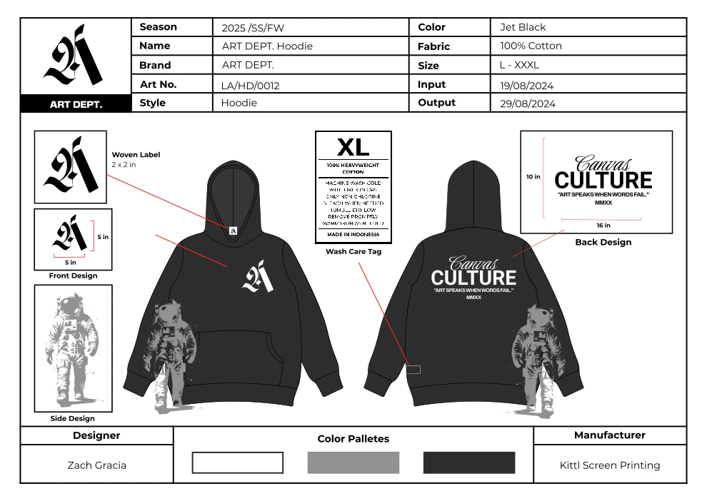
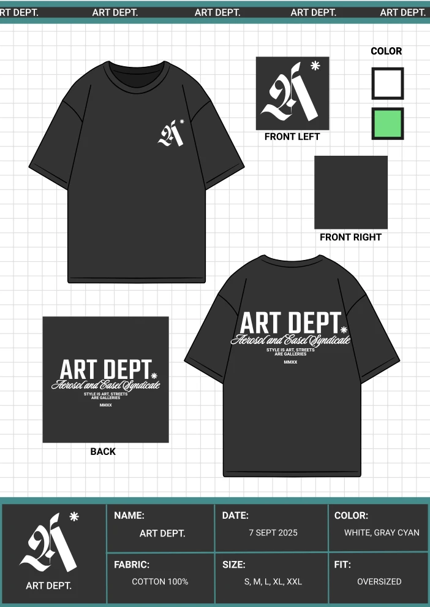

TAD, short for The Art Department, is where my apparel and art prints live: work I've finished and am ready to sell.
Things you can feel before you can explain them.
Production Season 00 · launched 10.21.22 · Los Angeles
Season 00
The first TAD collection: hoodies, tees, shorts, hats, socks, a hip pack, stickers and prints. Classical sculpture meets graffiti, under one line: love your fate.
 Season 00 tees
Season 00 tees Season 00 shorts
Season 00 shortsIdentity · since 2020
The mark
A blackletter A, a sharp asterisk, and the explorations around them.
Graphics
The graphics
Angels, praying hands, butterflies and classical busts, cut with graffiti and blackletter. Memento mori: remember you're mortal, and make the work anyway.
Product development · 2024–2025
Spec sheets
Every piece goes to production with a full spec: placements and sizes, the woven label, the wash-care tag, fabric, fit and colour.

Canvas Culture hoodie, tech pack
Create What You Can't Explain tee, spec sheetConcept · in development
Edition Zero
The next step for TAD is two tiers. Everyday shirts, still hand-designed and handmade. And one-of-a-kind pieces I make by hand, framed and hung like a painting. Each one carries a QR code on its label that opens the process and behind-the-scenes footage for that exact shirt.
Want to hear when the first pieces are ready? Get notified